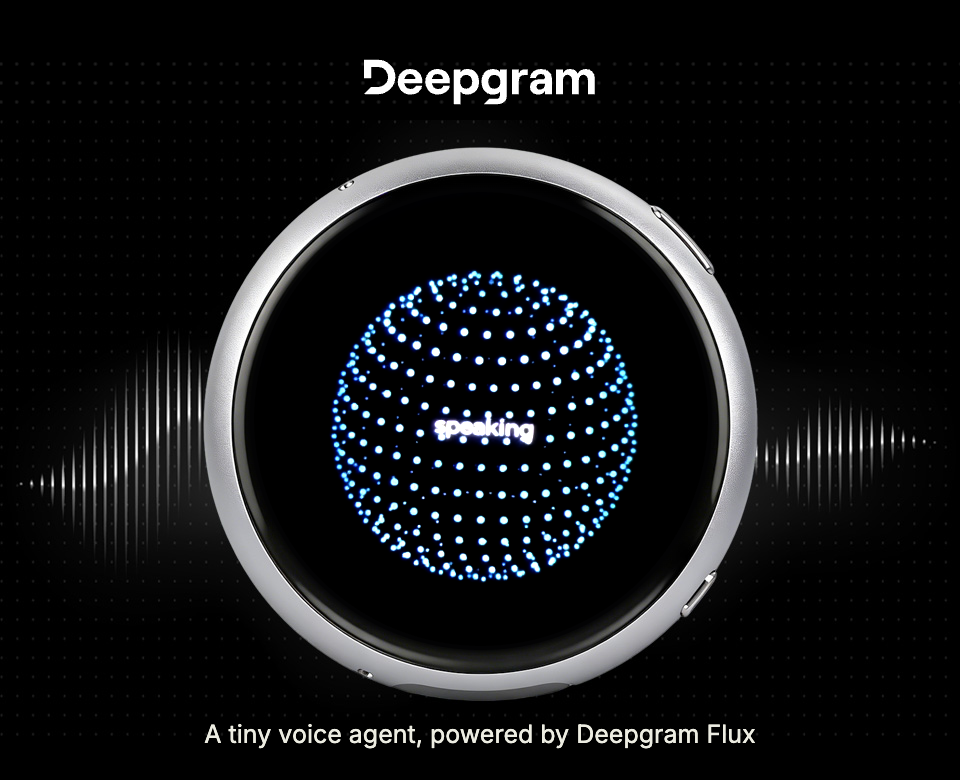
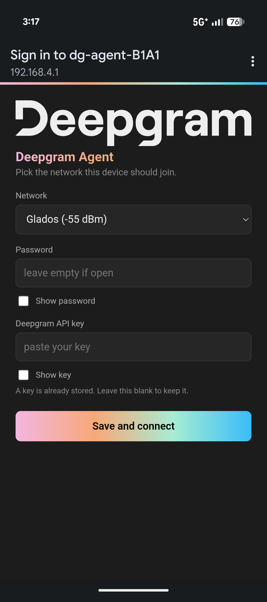

Open source · ESP32-S3
Microphone to Deepgram to speaker, over one WebSocket, held open by the board itself. No phone in the loop. No laptop. No bridge process on your desk pretending to be the device.

456 dots · 18 rings · drawn on-device
The whole loop, one board
A 466 × 466 round AMOLED, unmodified and out of the box. The face is drawn on-device at ~25 frames a second, its behaviour driven by the session state — connecting, thinking, speaking, idle.
16 kHz capture in 80 ms chunks, gated while the agent is speaking so the device never talks over itself.
Speech-to-text, the model, and text-to-speech on one authenticated socket. Flux speech stack, 36 voices.
Replies land faster than they play, so a 384 kB ring buffer absorbs the turn and the speaker drains it.
Tools wired to its own hardware
Not settings. The agent holds tools that reach the codec, the display and the session, so the way you reconfigure this device is to mention it out loud.
One touch free UI, just ask for a volume change and it happens hands free.
Saved to flash and folded into the system prompt as its own name.
Two interchangeable faces: a vibrant spectrum analyzer or an intuitive, stylish orb.
A simple ask customizes the color to fit your vibe.
Choose a Deepgram Flux voice that responds emotionally to your mood.
When the conversation is over, the device drops into low power mode conserving battery and tokens.
Specifications
| Board | Waveshare ESP32-S3-Touch-AMOLED-1.75C |
|---|---|
| Display | 466 × 466 round AMOLED, QSPI, capacitive touch |
| Audio in | ES7210 · 16 kHz · 80 ms chunks |
| Audio out | ES8311 · shared duplex I2S |
| Memory | 8 MB PSRAM · 32 MB flash |
| Faces | Orb (456 dots) · Spectrum (48 bars) |
| Voices | 36, switchable by asking |
| Endpoint | wss://agent.deepgram.com/v1/agent/converse |
| Firmware | 1.66 MB · ESP-IDF 5.5.5 |
| Setup | WPA2 access point, captive portal, QR to join |
Four steps, no toolchain
The published image carries no API key and no network, so it comes up asking for both.
A Deepgram API key, it comes preloaded with $200 to use, no credit card required.
One file: bootloader, partition table and app together, so flashing needs to know nothing about the layout.
With esptool and the board in download mode.
esptool.py -c esp32s3 -p /dev/YOUR-PORT \
write_flash 0x0 deepgram_agent-merged.bin
It raises its own encrypted access point and shows the code. Your phone joins, a page asks for your network and your Deepgram API key, and it reboots talking.
